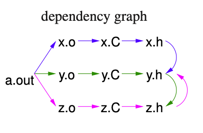
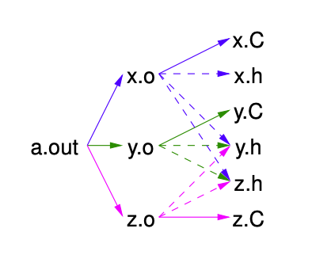

C++: Compiling Complex Program
Dependency
- Dependency in C++ occurs as following
- executable depends on
.ofiles. (linking) .ofiles depends on.cfiles. (compling).cfiles depends on.hfiles. (including)
- executable depends on
- Cycles in
#includeare broken through#ifndefchecks  - When changes are made to
x.handx.c, we do not need to recomplie every single.cfile. Only recompilex.cand linkingx.o,y.oandz.owill be sufficient.
Make
makeis a system command taking a dependency graph and uses file-changing time to trigger rules that bring the dependecy up-to-date.
make does not understand relationship among sources.
- Make file can have any names, but
makecommand will implicit look formakefileorMakefile - Basic syntax of
makefile(bash)
variable = value # variable
target: dependency1 dependency1 ...
command1
command2
...
command must be indented by one
tabcharacter
- The above example have the following dependecy tree
x.ofile is a product ofx.c, and is dependent onx.h,y.handz.h. - make file for the above example will look like
CXX = g++ #complier
CXXFLAGS = -g -Wall -c #comploer flags
OBJECTS = x.o y.o z.o # object files forming executable
EXEC = a.out. # executable name
${EXEC}:${OBJECT} #link step
${CXX} ${OBJECTS} -o ${EXEC}
x.o:x.c x.h y.h z.h
${CXX} ${CXXFLAGS} x.c
y.o:y.c y.h z.h
${CXX} ${CXXFLAGS} y.c
z.o:z.c z.h y.h
${CXX} ${CXXFLAGS} z.c
${CXX} ${CXXFLAGS} x.cis dedundent sincemakefilecould deduces this by the dependency structurex.o:x.c x.h y.h z.h- cleaner make file show as below
CXX = g++ #complier
CXXFLAGS = -g -Wall -c #comploer flags
OBJECTS = x.o y.o z.o # object files forming executable
EXEC = a.out. # executable name
${EXEC}:${OBJECT} #link step
${CXX} ${OBJECTS} -o ${EXEC}
x.o:x.c x.h y.h z.h # target/dependecy/commands
y.o:y.c y.h z.h
z.o:z.c z.h y.h
Automate target and dependencies
CXX = g++ # compiler
CXXFLAGS = -g -Wall -MMD # compiler flags, remove -c
OBJECTS = x.o y.o z.o # object files forming executable # executable name
DEPENDS = ${OBJECTS:.o=.d} # object files forming executable # substitute “.o” with “.d”
EXEC = a.out # executable name
${EXEC} : ${OBJECTS} # link step
${CXX} ${OBJECTS} -o ${EXEC}
-include ${DEPENDS} # copies files x.d, y.d, z.d (if exists)
.PHONY: clean # not a file name
clean: # remove files that can be regenerated
rm -rf ${DEPENDS} ${OBJECTS} ${EXEC} # alternative *.d *.o
- Prepocessor traverses all include file, so it knows all source-file dependency
- g++ flag
-NMDwrites out a dependency graph for source-file to filesource-file.d
| file | contents |
|---|---|
| x.d | x.o: x.c x.h y.h z.h |
| y.d | y.o: y.C y.h z.h |
| z.d | z.o: z.C z.h y.h |
-includereads the.dfiles containing dependecies..PHONY: Without.PHONY,make cleancommand works fine if there is no file named ‘clean’; however, there will be a problem when a file namedcleanexists. Once we defined.PHONY clean,make cleanwill run the recipe regardless of whether there is a file namedclean
We build a universal
makefilefor all projects.
Zhi Wang
Student at University of Waterloo
My research interests include distributed robotics, mobile computing and programmable matter.